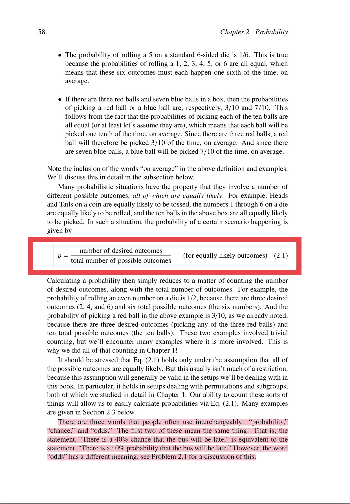

Clarifying Probability Concepts for the FBI Investigation : the difference between “the probability of a certain scenario happening,” Bernoulli trials, and Binomial distributions
Click on this link to visualize the original email: 2023-02-06_1711_0800_Probability_Bernoulli_trials_and_Binomial_distribution.pdf
From: Vincent Le Corre
Subject: Probability, Bernoulli trials, and Binomial distribution
Date sent: February 6, 2023, 17:11 +0800 (China Standard Time)
To: Adam Rogalski, Federal Bureau of Investigation, Edward Lehman
Note: since Assistant Legal Attaché Adam Rogalski told me on 2021-09-20 that he was “one of the FBI representatives,” I assume that this communication was transferred to the Federal Bureau of Investigation.
Click on this link to visualize the original email: 2023-02-06_1711_0800_Probability_Bernoulli_trials_and_Binomial_distribution.pdf
Another key point to understand is the difference between “the probability of a certain scenario happening”, Bernoulli trials, and a Binomial distribution.
In my email of January 27, 2023, I added a journalist called Walter Hickey because he once wrote an article for Business Insider about the Monopoly sweepstakes and his article is deeply flawed and plain wrong.
I consider this article to now be a piece of evidence in the current criminal investigation and it can help understand certain aspects of the frauds McDonald’s committed. There is one thing he says though which is right.
The probability of a certain scenario happening:
Please look at the attached screenshot filename IMG_6733.jpg
“David Morin is a Senior Lecturer and the Co-Director of Undergraduate Studies in the Physics Department at Harvard University. He received his A.B. in mathematics from Brown University and his Ph.D. in theoretical particle physics from Harvard University.”
https://scholar.harvard.edu/david-morin/home
Here is the definition he gives of “the probability of a certain scenario happening”:
p = (number of desired outcomes) / (total number of possible outcomes)
Dear Messrs. Lehman and Rogalski, do you agree with this definition ⬆️ of “the probability of a certain scenario happening”?
I will assume that you do, but if you don’t, let me know ASAP.
Bernoulli trial:
“In the theory of probability and statistics, a Bernoulli trial (or binomial trial) is a random experiment with exactly two possible outcomes, “success” and “failure”, in which the probability of success is the same every time the experiment is conducted.”
“Examples of Bernoulli trials include:
-
Flipping a coin. In this context, obverse (“heads”) conventionally denotes success and reverse (“tails”) denotes failure. A fair coin has the probability of success 0.5 by definition. In this case there are exactly two possible outcomes.
-
Rolling a die, where a six is “success” and everything else a “failure”. In this case there are six possible outcomes, and the event is a six; the complementary event “not a six” corresponds to the other five possible outcomes.”
https://en.wikipedia.org/wiki/Bernoulli_trial
Binomial distribution:
“In probability theory and statistics, the binomial distribution with parameters n and p is the discrete probability distribution of the number of successes in a sequence of n independent experiments, each asking a yes–no question, and each with its own Boolean-valued outcome: success (with probability p) or failure (with probability q = 1 - p). A single success/failure experiment is also called a Bernoulli trial or Bernoulli experiment, and a sequence of outcomes is called a Bernoulli process; for a single trial, i.e., n = 1, the binomial distribution is a Bernoulli distribution.”
I don’t expect FBI/Justice Department agents to immediately fully understand/comprehend what’s a Bernoulli trial or a Binomial distribution.
HOWEVER, I expect FBI/Justice Department agents to understand the definition of “the probability of a certain scenario happening” and the difference between an element and a set (see my previous email). Furthermore, I expect FBI/Justice Department agents to have a basic understanding that in a Binomial distribution, the number of trials affects the number of successes:
Click on this link to visualize the original email: 2023-02-06_1711_0800_Probability_Bernoulli_trials_and_Binomial_distribution.pdf
Click on this link to visualize the original document: IMG_6732.PNG
{kind=link}

Click on this link to visualize the original document: IMG_6733.jpg
{kind=link}